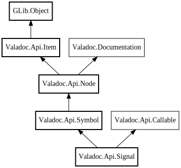

Signal
Object Hierarchy:

Description:
public class Signal :
Member,
Callable
Content:
Properties:
Creation methods:
- public Signal (Node parent, SourceFile file, string name, SymbolAccessibility accessibility, SourceComment? comment, string? cname, string? default_impl_cname, string? dbus_name, bool is_dbus_visible, bool is_virtual, void* data)
Methods:
Fields:
Inherited Members:
All known members inherited from class Valadoc.Api.Member
All known members inherited from class Valadoc.Api.Symbol
All known members inherited from class Valadoc.Api.Node
All known members inherited from class Valadoc.Api.Item
All known members inherited from class GLib.Object
- interface_find_property
- interface_install_property
- interface_list_properties
- @new
- new_valist
- newv
- new_with_properties
- add_toggle_ref
- add_weak_pointer
- bind_property
- connect
- constructed
- disconnect
- dispose
- dup_data
- dup_qdata
- force_floating
- freeze_notify
- @get
- get_class
- get_data
- get_property
- get_qdata
- get_type
- getv
- is_floating
- notify_property
- @ref
- ref_sink
- replace_data
- replace_qdata
- remove_toggle_ref
- remove_weak_pointer
- @set
- set_data
- set_data_full
- set_property
- set_qdata
- set_qdata_full
- set_valist
- setv
- steal_data
- steal_qdata
- thaw_notify
- unref
- watch_closure
- weak_ref
- weak_unref
- notify
- ref_count
All known members inherited from interface Valadoc.Api.Callable
All known members inherited from interface Valadoc.Api.Browsable
All known members inherited from interface Valadoc.Documentation